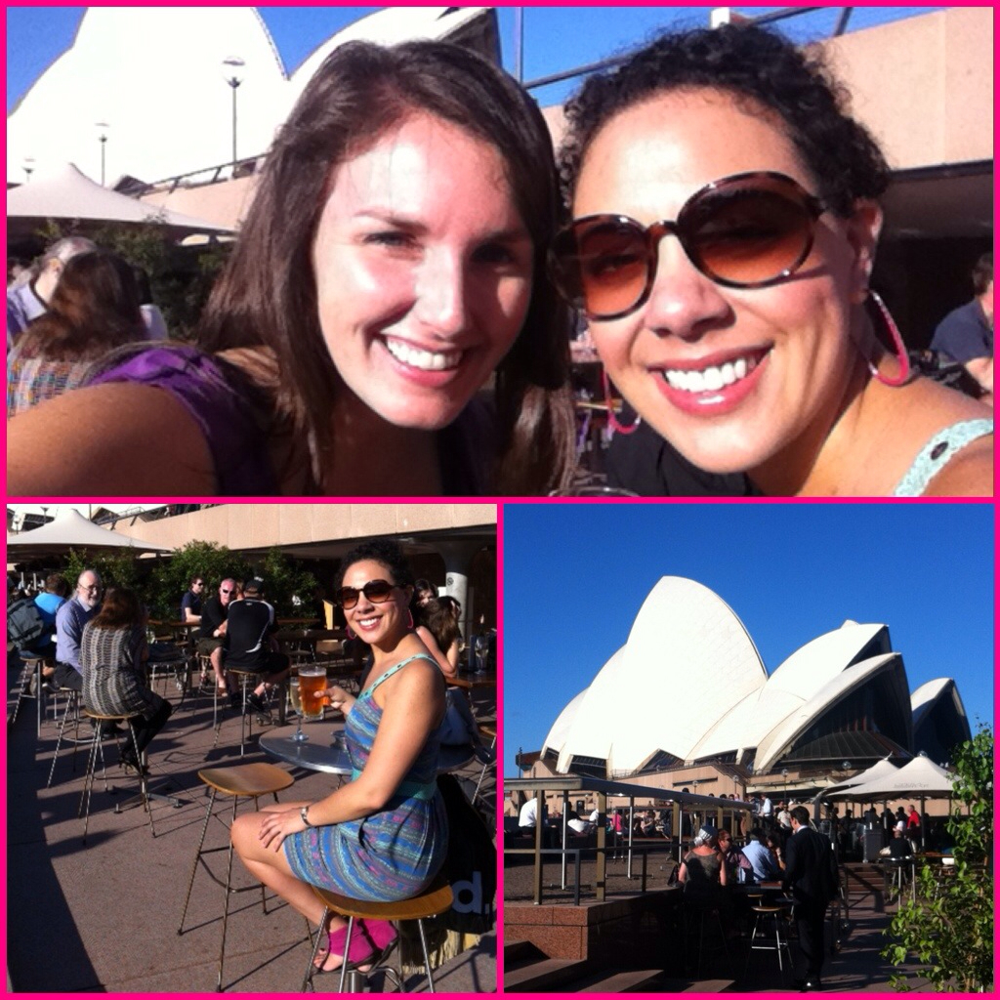
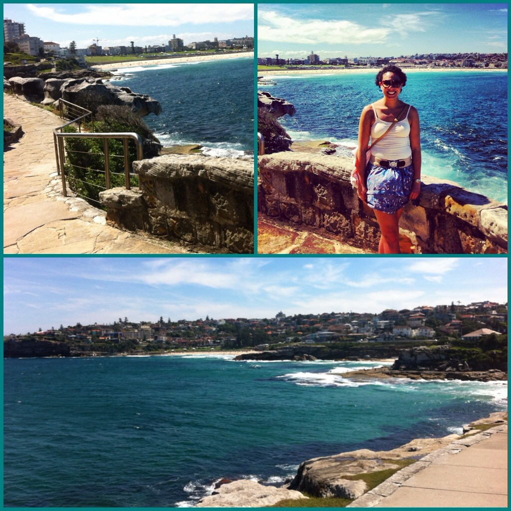
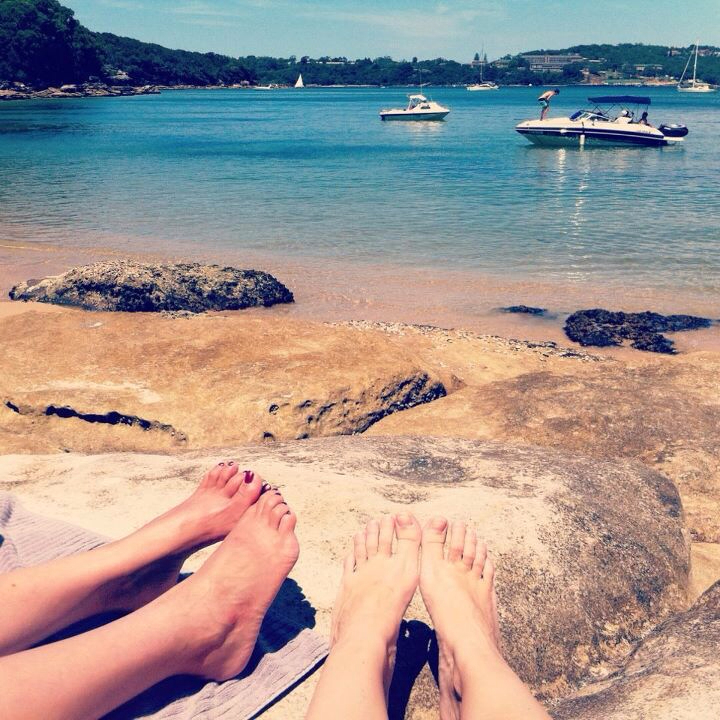
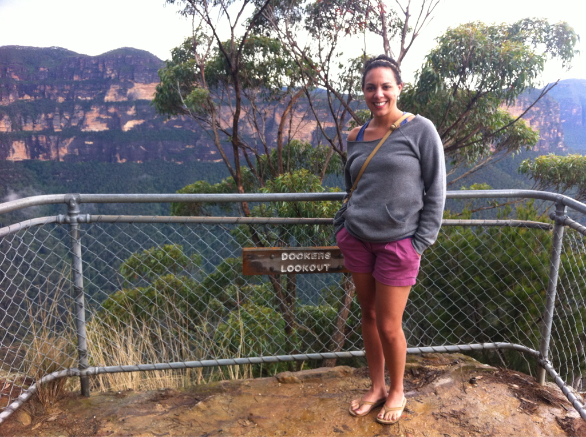

Sydney
[insert (cough) (throat clearing) (blank, inquisitive yet frightened stare) here]
hhhmmm? I'm sorry, I thought you just asked if I had an Australian visa? An Australian visa. (looks through purse/passport) Why would I need an Australian visitor's visa!? Surely I don't need a visa to go to Australia. I mean, I can only hope so since (clear throat) I do not, at this exact time, have an Australian visa.
So here is a tip for you: You need a visa to get into Australia.
At the Bangkok airport, after traveling for however many hours and sleeping an approximate total of four, I found out I did indeed need a visa I did not indeed have. Blasted! All I could think about was how this was my most highly anticipated part of the trip and there was absolutely nothing more I wanted to spend my time seeing or doing in Thailand. I mean, at this point. Later on, down the line, of course there will be more to see. Whatever, I was in a bad mood after this new found news. I digress!
Turns out, however, the visa is issued as soon as you submit the form online. Ha! The Thai Air check-in counter lady and her crew signed me right up and we were all set. Thank the Lord! That was a close call... and I have got to look into that stuff more closely in the future! When the words "if you don't have one, you can't go" came out of her mouth, she had me definitively shaking in my boots. I can easily say that this was the biggest scare of the trip; not the missing the flight or the getting lost. But the good news is that no time was lost and we were on our way to our Valentine's Day date in Sydney, overlooking the harbor. Huzzah!
Come fly with me; come fly, let's fly away...
I am in Sydney! I've made it... and I'm typing on a real computer. This is just so much more helpful than using an iPad or iPhone.
I got in late here and got through immigration without a scratch (and with my Pepperidge Farm Goldfish! Did I mention that I found those bad boys in the Bangkok airport prior to Cambodia? yum yum yum home). Lauren came in and got me at the entrance - so sweet since parking was $15! - and she was the only one without flowers or balloons. What's up with that?! Kidding. No one needs to spend money on those things. She bought parking! She came in! It was great to see her pretty face.
It was a blessing coming from the airport at night because, as we rounded a bend in the city heading to her apartment in Neutral Bay, the House (Opera House) came into lit view and it was simply majestic. What an astounding and breathtaking structure. I've seen so many pictures and seeing it in person was far beyond what I thought it would be like. The Sydney Opera House, a building of architectural wonder, is one of the most beautiful man-made wonders I've ever seen. Honestly. (Take that, Burj Al Arab!)
We passed over Harbour Bridge and got to Lauren's place... only to find she has a floor to ceiling view of the city of Sydney covering her entire back wall. Gasp! Think Manhattan from Jersey City or San Francisco from Twin Peaks (but better because it's so clear)... it's like we're watching the city in high def. Anyway, we sat up and chatted for a while but needed to get to bed because I didn't quite get to much sleep the night before or on my flight.
Speaking of which, I was wondering about that... Then I realized I really wanted to watch TV that didn't focus on Middle Eastern news. So I watched Crazy, Stupid, Love (which was adorable and wonderful in every way), Moneyball (!!! Oscar !!!), and Sweeney Todd. I've been wanting to see that for a while and, come to think of it, I did fall asleep during that one. I’m not sure why as I could watch Johnny Depp's mouth for hours... but then they started singing... and... oh wait. That's it.
My movies took up most of the space on my flight (as did the chick that decided to come and sit in the open middle seat next to me... bah!) and the nine hours flew by in a flash. If I could recommend Thai airlines to you now? Please. Fly them. I feel like it may be like what Pan Am was back in the '50s. Beautiful in every way...
Did I take a wrong turn and end up in heaven... I mean, San Francisco?
For my first day here, Lauren thought it would be a good idea to head around town and get a feel of the culture of Sydney. She pointed me in the direction of both Newtown and Surry Hills to check out the shops, cafes, and general wonder that is central Sydney life; she knew I would love it there.
And I did! I ran some errands like a true Sydneyite and then hopped on the bus for the ride in to town. Since I had fully slept in (the time difference is five hours from Cambodia/Thailand), I was starving for some lunch. I headed straight to VargaBARespresso off King Street for what turned out to be the greatest lunch of all time (exaggeration!)... it was delish. From there, the waitress had me head towards farther down the street to see some antiques shops and vintage storefronts. They are REALLY into secondhand here... but REALLY cool secondhand. I could have been there for hours and I actually was. I wandered in and out of the various stores full of odds and ends and even bought myself the cutest skirt! Surprisingly it wasn't as expensive as I had expected it to be... it's not cheap here, people. But, it reminds me so much of San Francisco. Not as vagabondish as Portland, but as highlife as San Francisco.
After exhausting every nook and cranny of the area, I jumped onto another bus to head to Surry Hills. (squeal!) Reminiscent of Pacific Heights but cuter (houses aren't so big)... Pacific Heights goes to London - that's it! It's so charming there! The shops are a little higher end and I directed my sights on The Winery, an outdoor wine bar that has wines from everywhere around the world except Napa - how refreshing! Lauren had mentioned their Sangria was delightful on a hot day but they didn't have it for one, so I opted for the tried and true Sauvignon Blanc in honor of Kristi. Ha! I just sat there on the patio and enjoyed the sights and sounds of the area, under a shady little tree. Truly it was delightful.
At this point it was time to meet up with Lauren at Opera Bar for an afternoon libation. Another one! Phew... beer for me, please and thank you. Um. So Opera Bar. Sitting on the dock of the bay under the Opera House, this is a must do for those heading to a show, entertaining a happy hour set, or (apparently) after a show for some jazz and dinner. It was gorgeous! The weather couldn't have been better. At six o'clock it was as light as 3 or 4p at home... God bless the Southern Hemisphere in summer!
While there my friends Matthew and Brittan from Pepperdine joined (I'm not sure why I failed to get ANY pictures with them) and we had another cider. Isn't it great to catch up with long lost friends all over the world?! Yes. Lucky me to have them and keep in touch. Thank you, Facebook! From there we were off to Felix for some dinner. As we were walking through York street, with bird cages overhead (art! lovely!), Brittan was attacked by a homeless man in a rash act of undue aggression... who knows why. We laughed (I'm not sure why) about that and settled in to our cozy dinner digs. Following that we popped by Ivy Pool Club to cash in on some free drink tickets and have a sit by the rooftop pool.
Matt and Brittan walked me to the bus stop and I was off to Lauren's to prep for another day of adventure... oh, and by the way, Happy Valentine's Day to those in the states. I thoroughly missed that one.... xo
I was told there were surfers here?
Today was glorious. On recommendation from Lauren, because the weather has been so lovely, I planned to head to historic Bondi Beach (arguably the most famous stretch of sand in the world) to take in the scene and watch some real surfing. AAAAAAAH! More on that to come...
Before heading out there, I wanted to make sure I did do a little bit of true sightseeing so I popped by the harbor to take in some views. After meandering around the main harbor area for a short bit, I decided to take the Opera House tour to really get to understanding this historic landmark. An hour later, and after a brief lunch at the Studio Cafe, I was off to Bondi for the rest of the day.
The beach is only a quick bus ride from Circular Quay and once I arrived, I was in paradise. Resembling Santa Cruz on a perfect summer's afternoon (I'm not kidding, I seriously thought it the moment I saw the sand), Bondi Beach is indeed a wonderful place to spend the day or even a weekend. There are spots everywhere to stay on the main drag and there are a good deal of shops to duck into after the sun has drained all of your napping energy.
After grabbing a malt (not unlike those sold at Candlestick Park), I headed from the Pavilion off to enjoy the view of the beaches from the Coastal Walk. (scream!) Possibly one of the most beautiful walks I've taken, the Coastal Walk overlooks Bondi's blue-green water all the way to Tamarama Beach. The views of the sunbathers and world-class surfers only added to the mystique and beauty of the landscape.
I headed back towards the main stretch after spending some time watching the waves on a bluff. So romantical! But also an amazing place to watch the boys in the water - sans and with wetsuits. Hottie McHottersons, thank you.
After laying around, catching up with Lauren back at the apartment about our days, we got to meet up with Derek (a college friend who lives right down the street) for dinner and a drink. It was so wonderful getting to catch up with him for the first time in six years; the last time I saw him was when he visited New York while I lived there.
Today was glorious and I got to see real Australian surfers! Tomorrow will be even better, too. Lo is taking me to her favorite hidden beach where we'll get to lay out and actually get into the blue blue water! I can't wait to truly experience the awesomeness of a pure Australian beach...
"Yes, on the way back, you'll have to climb all of these stairs."
Friday Lauren took the day off and, after a leisurely wake up, we headed off to her favorite, hidden beach over near Manly. Castle Rock is down behind a residential neighborhood, below about 500 steps and lush forest. I felt like I was off galavanting through true Amazonian jungle as we stepped from daily life, through overhanging foliage, to a pristine beach. I mean, though it only took seven minutes to get there. It was a short yet vivid imagination set...
We had stopped by a real Aussie deli on our way in to grab a picnic lunch and refreshment prior to getting there and by the time we had exerted so much energy, we were ready to eat. After that, it kinda gets boring... because all we did was eat, drink water, lay out in the blazing hot sun, and cool off in the perfectly temperate water. Oh, did I mention clear, blue, temperate water? I shouldn't forget...
We stayed there - people watching really - for a few hours and it was splendid. Gorgeous beach babes (outside of ourselves, of course!) were laying around and the boys were in and out of the water, tubing and jumping off the sides of boats. All we could think was "get a job". Why were they all out there in the middle of the day?! Occupy Castle Rock.
Anyway, we trekked back up the steps to get home, shower, and swap clothes to prepare for our night of Rooftop Cinema. Quite the summertime hobby throughout Sydney, watching movies on the roofs of larger apartment buildings is an engaging way to spend a night. We grabbed some Thai to go and were off to meet some of Lauren's friends from work.
We watched a 10-minute short foreign film. How smart of us! We overate sour worms and gummy worms and musk (yuck!) and unflavored popcorn. How wise of us! We watched Rango with Johnny Depp. How stupid of us! Just kidding. But it was really boring. This, I do not recommend. The company and the activity? Bar none. We had a blast and it was fun getting to know a different side of Sydney than what the usual tourist sees.
After a drive through the city with Lauren pointing out where Leo (her biggest crush of days gone by) was staying, we made it home tuckered from the day. Isn't it weird how just laying around in the sun can just take it all out of you?! Sheesh.
Tomorrow is road trip day... can't wait!Road Trip!
With so much on the docket for this weekend, Lauren and I decided against the Hunter Valley wine getaway and settled on a day trip to the Blue Mountains instead. As Ginny Owens has sung: Oh, what a wonderful wonder.
Now, I know I used this description of the gold temple that happened on the middle of the water in Kyoto - remember that one? - but this was magnificent! If I may, for just a moment, I will testify to the fact that anyone who does not believe there is a Creator who has specifically designed our earth for us to enjoy is just kidding themselves. Seriously. Look at it. Look around you. Go on, do it. Out the window. Walk outside now. To your left, to your right. Look up for heaven's sake. Then down. Now, I don't want to get you all uncomfortable but it's just the truth. (Just be glad I'm not going in on Him designing you because that usually gets all kinds of thorny... stay with me here, and be glad this is the first time I've brought it up.)
The small portion of the Blue Mountains that we saw today seemed to be a parallel of the Grand Canyon in Arizona (I mean, you know where that is). Whoa! We first parked at the Echo Lookout to take in the Three Sisters, a rock formation believed by the Aboriginal people to be three sisters who were turned into stone. The legend goes that these three beautiful girls loved three warriors from another warring tribe and they couldn't be together (how romantical in a purely Shakespearean sense!) so a witchdoctor turned them to stone so as to protect them from harm during the tribes' war. Sadly, he was knocked off and he was the only one who could turn them back! I'd venture to say they got the raw end of that deal... and here they stand, in the Blue Mountains, to be stared at forever. There is another legend but I don't have time to go into it right now. I'm still figuring out why there are two in the first place...
After climbing the Great Stairway to see the sisters face to face (and, frankly, almost die; what are they THINKing putting stairs in the middle of nothingness?!), we headed off to get some lunch in downtown Katoomba. Or, at least we tried to. Turns out our coach didn't want to start. Freak out. We were in the middle of, kinda, nowhere with no understanding of what to do so far from Sydney. Thankfully Lauren's dad had set her up with Australia's version of AAA and Lewis was out to help us within 20 minutes.
Of this story, two things are certain: we don't know Lewis' actual name and therefore this is made up, and the car was not actually IN park. Now, that second point? Yes, I find it exquisitely embarrassing. Actually, it was in park. BUT in 1990, you could also start a car in neutral - whomever thought THAT was a safe idea... Anyway, Lewis got it started as soon as he jiggled the gear shift and our promising plans for a lively and outdoorsy afternoon were able to resume!
We picked a lovely little cafe with a great menu and outdoor seating and found ourselves extremely happy about our pick as the torrential rains came tumbling down. There went our plans of grandeur for the remainder of the afternoon. Never ones to let a little precipitation stop us, however, we headed down the road in our 1990 Mazda steed and came upon a lookdown. Nope, not a lookout, a lookDOWN. The rain had subsided and we were able to take the... FIVE HOUR?! hike down. Wait, oh, I see, five... minutes... Different hi... I see.
Gracious me. The trees went on for miles and miles. The rock formations in front of us displayed a splendor of colors in the afternoon sunlight mixed with rain that rivalled none I've seen before. On the far side of the plateau, lighting struck down in wild torrents cracking with great smacks of thunder. Majesty was all around us. Fearful that we might get caught in another downpour, we headed for the little town of Blackheath to enjoy a cool cider in a true Australian pub.
We peeked through an antiques shop (which, I can't lie, I REALLY wanted to find something in but I'm really not good with [mostly] collected junk) and found ourselves at the Gardners Inn. Did you know that the GI has been welcoming travellers since 1831? Imagine that! Me neither! We savored a cold one and figured it was about time to hit the road to get back home.
Just as we were approaching the Maz, the skies opened and the rains came down again. Just in time! Thankfully the car started and we were cozy in our ride. After one minor snafu with a malfunctioning, or, should I say a "hard to use", defroster, we were swiftly headed back to Sydney. The day was long and it was time to prep for a longer day tomorrow.
Tonight we'll have dinner and a movie in. Just what I've waited for these past two and a half weeks...